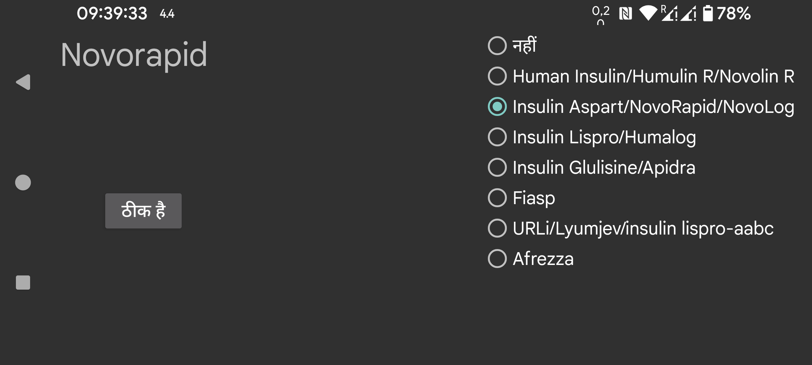

IOB इस बात का माप है कि पिछली इंसुलिन खुराकों से कितनी इंसुलिन शेष है। Juggluco 9.2.0 से पहले IOB का अनुमान लगाने के लिए Insulin Aspart का Blood Insulin Concentration वक्र उपयोग किया जाता था। अब आप इंसुलिन का प्रकार निर्दिष्ट कर सकते हैं और Juggluco उस इंसुलिन प्रकार के लिए विशिष्ट Blood Insulin concentration वक्र का उपयोग करेगा। यदि लेबल तेज़ क्रिया वाली इंसुलिन के लिए नहीं है तो नहीं निर्दिष्ट करें, अन्यथा इंसुलिन का प्रकार निर्दिष्ट करें। विकल्प हैं:
Human Insulin/Humulin R/Novolin R
Insulin Aspart/NovoRapid/NovoLog
Insulin Lispro/Humalog
Insulin Glulisine/Apidra
Fiasp
URLi
Afrezza
IOB सूत्र कैसे निर्धारित किए जाते हैं यह निम्नलिखित वेब पृष्ठ पर वर्णित है: https://www.juggluco.nl/Juggluco/IOB/overview.html
यदि आप किसी तेज़ क्रिया वाली इंसुलिन प्रकार के बारे में जानते हैं जिसका उल्लेख नहीं किया गया है, तो आप मुझे ई-मेल भेज सकते हैं।